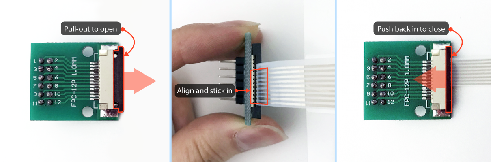
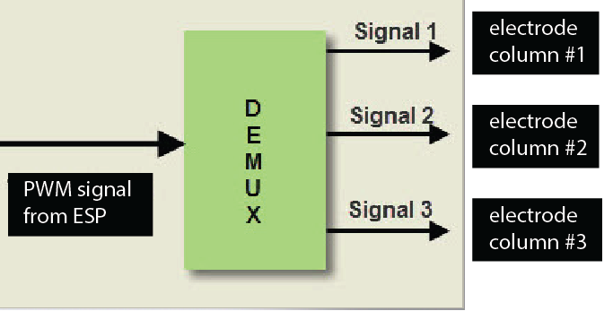
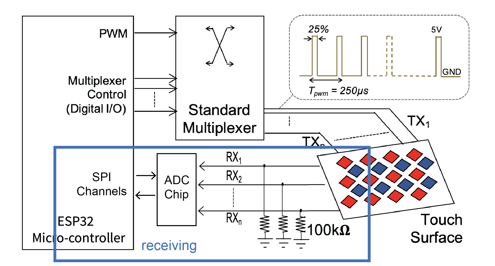
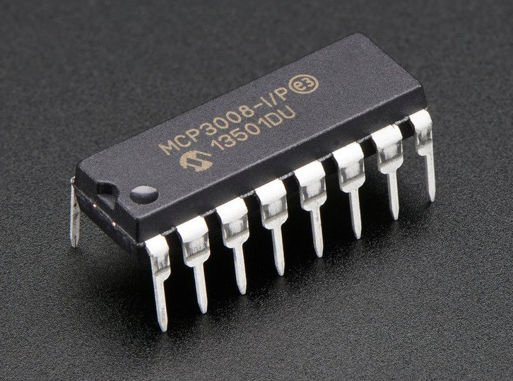
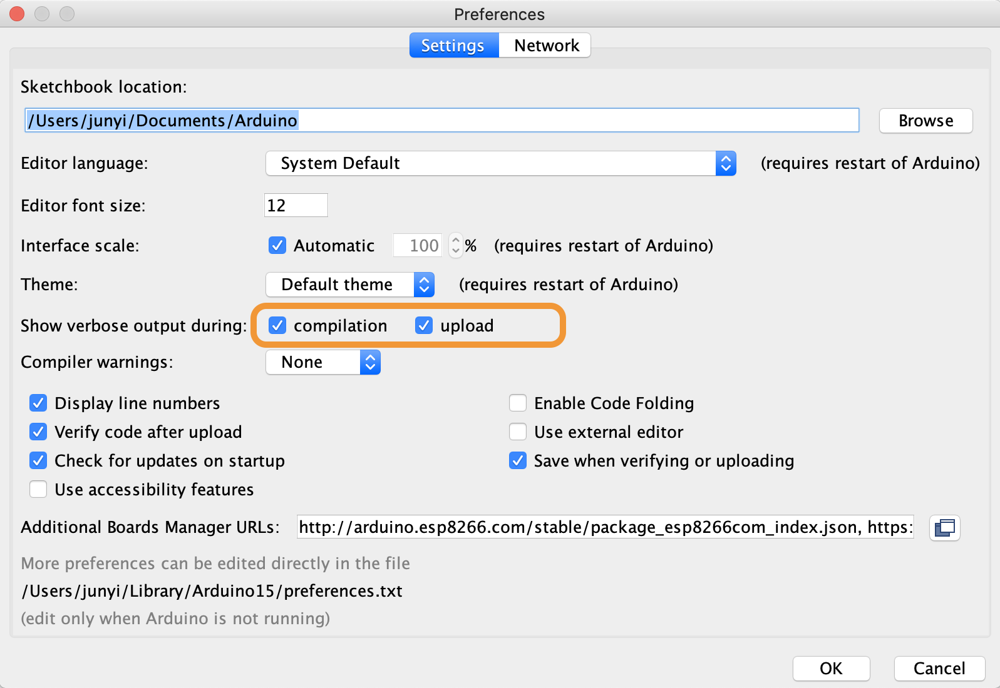
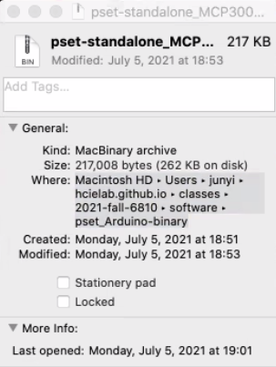
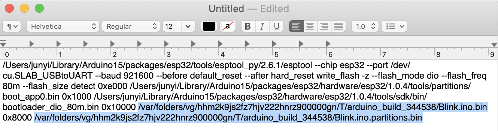

6.810 Engineering Interactive Technologies (fall 2021)
Pset2: Assembling the Multi-Touch Pad and Circuit
In this problem set, you will print out your multi-touch pad on the conductive inkjet printer and assemble the top and bottom layer. After this, you will build the touch-sensing circuit and connect your multi-touch pad to it. As part of building the circuit, you will also have to solder some header pins to some of the components first. At the end of this problem set, you will download a piece of test code that will verify that the assembled multi-touch pad and the corresponding circuit is correct, i.e. the test code will verify that your hardware can sense touch data from a user's finger.
Steps:
- Inkjet Print Top and Bottom Electrode Layers
- Confirm Electrodes are Conductive and No Crosstalk
- Glue Together Top and Bottom Electrode Layers
- Laminate the Assembled Multi-Touch Pad
- Solder FPC Connectors
- Connect FPC Connectors to Multi-Touch Pad
- Solder Multiplexer
- Build Sending Circuit
- Build Receiving Circuit
- Testing your Circuit
Help us Improve Class Materials for PSet2:
Please let us know if anything was confusing in the write up or if you had trouble with the test program.
You can add your comments here.
Ask a TA to give you the fabrication files (.pdfs) if something went wrong in pset1
In case you did not finish pset1, you can ask a TA to provide you with the fabrication files (i.e., the two pdfs for the top and bottom electrode layers) so you can continue pset2. If you finished pset1, but upon review by the teaching team, it turns out that your fabrication files have a problem that cannot be easily fixed, you can also ask a TA to give you the fabrication files.
(1) Inkjet Print Top and Bottom Electrode Layers
Inkjet Print: Once the TAs have verified the two fabrication files (.pdfs) you generated in pset1, you can print them out. Ask a TA to give you the two transparent sheets (one for the columns and one for the rows) you need for printing.
Find out which side of the transparent sheet to print on: Only one side of the transparent sheet has the coating that makes the silver ink conductive, so you have to make sure you use the correct side. Use a drop of water on a corner of the sheet. You will notice one side will turn a bit white and the other will have no change. The white side is the one we want to print the silver on and it should be facing up when you insert it into the printer.


Print Settings: The rest of the printing is the same as in lab. If you don't remember how to print, you can find information here.
(2) Confirm Electrodes are Conductive and No Crosstalk
Check conductivity of printed electrodes: Test each electrode line with a multimeter to see if the print is conductive enough before assembling the top and bottom electrode layers. Sometimes during printing not enough silver ink comes out (e.g., because of clogged print nozzles) and the resulting print is not conductive enough. To test this, take the multimeter and hold one probe to the leftmost electrode and the other probe to the rightmost electrode. If you see that the resistance reading is less than 300 ohms, there is no issue. You can also test each electrode pair individually and you should see that electrodes closer together will have less resistance between them than electrodes further apart since resistance builds up over the length of the wire.
Check crosstalk between adjacent rows/columns of printed electrode:
Test that there is no connection between adjacent rows/columns using a multimeter. If there is no cross-talk, there will be more than a megaohm resistance between adjacent rows/columns.
(3) Glue Together Top and Bottom Electrode Layers
Assemble: To assemble both sheets together, please ask a TA to help you with this either in lab or in an OH.
Conductive side of both sheets should face upwards: First, check that both of your sheets have the conductive side facing upwards.
Stack and Align both electrode sheets: Next, stack your electrode sheets on top of each other and align them precisely. The alignment between the top and bottom electrodes is critical for receiving an accurate sensing signal.
Attach tape to maintain alignment: To help maintain the relative alignment, tape the two sheets together on one side using regular scotch tape.
Flip top sheet over: Flip the top layer up, so that the bottom layer is exposed.
Glueing with tape vs. tattoo transfer paper: While you could use simple double-sided transparent tape for glueing the sheets together, the tape has a certain thickness to it. This is a problem because more space between the electrode layers results in worse sensing. The electrodes are already spaced out by the thickness of the sheet on which they were printed, so the tape would add even more thickness. To keep the glue layer as thin as possible, you will instead use the adhesive of temporary transfer paper.
Using the tattoo transfer paper to glue the top and bottom sheets together: Ask a TA to give you the tattoo transfer paper and help you with this step. Pull off the protective cover from one side of the tattoo transfer paper, then attach the now exposed sticky side of the tattoo transfer paper to the bottom electrode sheet to cover all the electrodes (no need to cover the wires). Next, remove the second protective cover from the other side of the tattoo transfer paper to reveal the second sticky side. Now flip back the top electrode layer to make everything sticks together (check your electrode alignment one more time before you do this).

(4) Laminate the Assembled Multi-Touch Pad
Now that both layers are glued together, the next step is to laminate your multi-touch pad. This has two purposes. First, since the conductive side of the top sheet is facing towards the user, the silver of the top electrodes is still exposed, and you need to cover it up to prevent the user from touching it directly. Second, lamination helps with durability of the multi-touch pad.
Leave end of Wires Exposed: We will give you two lamination sheets that you can use to sandwich your multi-touch pad. When you sandwich your multi-touch pad between the lamination sheets, make sure you leave the end of the wires exposed that will later connect to the FPC connector. You can use the lamination device in lab or in an OH. (Below it looks like we already cut out the multi-touch pad, no need to do this at this point, you will do it later in this pset).

(5) Solder FPC Connectors
Once you have the multi-touch pad printed and assembled, you need to connect its inkjet printed wires to a breadboard so it can work with the rest of the circuit.
FPC connectors: In the labs, we used crocodile clamps to connect our inkjet printed circuit to a breadboard but for the multi-touch pad, the wire spacing is so tight that crocodile clamps will not work. A component that is more suitable for our purposes is a Flexible Printed Circuit (FPC) Connector. The FPC connector has high resolution connectors on one side, which we will use to connect to the inkjet printed circuit, and on the other side has more widely spaced connectors, which we can use to connect to our breadboard. We bought these FPC connectors here.
Soldering header pins onto the FPC connectors: You have two FPC connectors, one for the top and another for the bottom electrodes. Since they don't have the header pins on them yet, you need to solder them on yourself. You have some header pins in your fabrication bag. Use the method in the video below to ensure your pins will be straight after soldering.
Please let us know if anything was confusing in the write up or if you had trouble with the test program.
You can add your comments here.
In case you did not finish pset1, you can ask a TA to provide you with the fabrication files (i.e., the two pdfs for the top and bottom electrode layers) so you can continue pset2. If you finished pset1, but upon review by the teaching team, it turns out that your fabrication files have a problem that cannot be easily fixed, you can also ask a TA to give you the fabrication files.
 |
|
Testing if each pin on your FPC chip is soldered: You can use a multimeter to test if each pin on the FPC chip is correctly soldered. If you examine the top layout of the FPC chip closely, you can see that it shows you its wire layout, i.e. how each pin on one side of the FPC connector is connected to the other side (see image on the left). Place one tip of the probe on the soldered header pin and the other probe on the wire on top of the chip (see video on the right). If the header pin was soldered properly, the multimeter will beep, which means there is a connection.
(6) Connect FPC Connectors to Multi-Touch Pad
Cut out the area around multi-touch wires for FPC connection: Before you can connect your FPC connector to the multi-touch pad, you will need to cut out some free space around the end of the wires on your multi-touch pad. When you cut out the area for the connector, pay extra attention to ensure that it will fit inside the FPC connector; the little pins inside the FPC connector head should align precisely with the wires of your multi-touch pad, otherwise there is either no connection or a very fragile connection.
Connecting the FPC connectors to the wires of the multi-touch pad: Once you soldered your FPC connector and cut out the wires on the multi-touch pad, you are ready to connect the FPC to your multi-touch pad. Make sure the conductive side of the multi-touch pad, i.e. the silver traces, are facing towards the breakout board of the FPC (i.e. where you just tested for conductivity). Pull out the little tab on the FPC connector, insert the wires, then push the little tab back in to secure the wires. Once you are done connecting one side of the multi-touch pad, repeat the procedure for the other side to connect the second FPC connector.

Testing if your FPC chip makes a connection to each wire from the multi-touch pad: You can use a multimeter to test if each pin on the FPC connector is properly connected to each of the Multi-touch pad wires. First, check one more time that each of your wires is conductive by sampling two points on the wire and checking that it shows < 300 ohms. Once you are sured your wires are still conductive, check the wire-to-FPC connection by sampling one point on the wire and the other on the FPC header pin.
Disconnecting/Reconnecting the Multi-Touch pad from Circuit: For the future, when you store your multi-touch pad and need to disconnect it from the main circuit, make sure you do not disconnect the FPC connector from the inkjet printed multi-touch wires. Unclipping and reclipping the FPC from the inkjet printed traces repeatedly will break the silver traces, so it's better to not do this at all. Instead, only unplug the jumper wires from the header pins of the FPC connector and leave the FPC connector connected to the multi-touch pad at all times.
(7) Solder the Multiplexer for the Sending Circuit
Before you can build the sending circuit, you need to solder header pins onto the multiplexer (we will explain in a minute what the multiplexer is for). A multiplexer is also sometimes call 'Mux' for short.Soldering header pins onto the multiplexer: The multiplexer we bought has no header pins attached yet, so you need to solder them on. You have some header pins in your fabrication bag. Make sure you solder on the pins straight using the method shown below, otherwise you multiplexer will not fit into a breadboard.
Testing if each pin on your multiplexer is soldered: You can use a multimeter to test if each pin on the multiplexer is correctly soldered. Similar to the FPC chip, you can see that the multiplexer shows its wire traces on the board. Place the tip of one probe on the soldered header pin, and the other probe on the leg of the chip at the end of the trace that starts at the corresponding soldered header pin. If the header pin was soldered properly, the multimeter will beep, which means there's continuity.
(8) Build Sending Circuit
Before we build the sending circuit, let's briefly recap how the multi-touch pad will work.Multi-Touch Pad Working Principle: As mentioned in lecture, the multitouch pad consists of sender electrodes (e.g., columns) and receiver electrodes (e.g., rows). A signal is injected into the sender electrodes and the receiver electrodes then pick up the signal and any modulation to it that occured due to a user's finger. The sending circuit injects a PWM signal into the sender electrodes. When powered, the multitouch pad sends a PWM signal to each of the sender electrode columns one by one, i.e. first sends the PWM signal to the first sender electrode column, then the second, then the third and so on. After it reaches the last sender electrode column, it restarts from the first.

Number of Sender Pins: Since we need to send a PWM signal to each column of electrodes individually one after another, sharing a single PWM sender pin like we did in lab does not work since it would send a signal to all electrodes simultaenously. To send a PWM signal one by one to each column, we need as many sender pins as we have columns. While we have enough GPIO/PWM pins on the ESP for our 8x9 Multi-touch pad (i.e. 17 in total, 8 for receiving and 9 for sending), we would quickly run out of pins if we used a multi-touch pad with a higher resolution. We, thus, want to introduce a new component: a multiplexer, that allows you to scale up the number of pins you have available while reducing the number of ESP pins needed to send the signals.
Using a Multiplexer to Scale up the Number of Sender Pins: A multiplexer can take one single input and direct it to multiple outputs (de-multiplexing). Thus, for sending, we can use a single pin on the ESP to generate the PWM signal and then pipe the signal through the multiplexer, which can direct it to the individual electrode column that the signal should be applied. We bought the following multiplexer from here. You can find the datasheet here and the schematic file here.

Breadboard use: Before you start wiring, we recommend strategizing about how you want to layout your breadboards. We recommend to put the two breadboards that have the ESP on it in the middle and then put one more breadboard to the right of the ESP (this can hold the circuit for the sending circuit with the multiplexer) and one more breadboard to the left of the ESP (this can hold the receiving circuit with the ADC chip, as described in section #9).

Connecting the Multiplexer to the ESP and FPC: Let's build the multiplexer sending circuit.
Providing the Input Signal from the ESP (SIG): First, let's start by providing our multiplexer with the input signal from the ESP. For this, connect the signal pin (SIG) on the multiplexer to
GPIO16 pin on the ESP (any GPIO pin would work but we ask you to use the pin numbers we specify which will make debugging your code in the later psets easier).
Connecting the output channels to the electrode columns (C0-C8): If you look at your multiplexer, you will see that it has 16 output channels (pins on the left side, C0-C15). We want to connect each output channel to one column of our multi-touch pad (we don't need all 16 channels since our multi-touch pad only has 9 columns). We will use
channels C0 through C8. We can then use the multiplexer to redirect the input signal from the SIG pin to one of the channels, thereby injecting the signal into a specific column of the multi-touch pad. Connect each of your electrode colunmns to one of the pins using male-to-female jumper wires from the FPC to a breadboard.Selecting which Channel to send the Signal to (S0-S3): How do we tell the multiplexer which channel
C0-8 our input signal SIG should be directed to, i.e. how can we tell the multiplexer to send the input signal to, say, the C6 output pin? We do this by providing the multiplexer with a 4-bit, binary enconding of our desired output through the four pins on the right side, labeled S0-S3. Why four pins? The multiplexer expects a binary signal, e.g. sending 0,0,0,0 to S0-S3 directs the output to pin C0, whereas sending 0,1,1,0 to S0-S3 directs the output to pin C6. Thus, by using the multiplexer we can send a signal to up to 16 electrode columns (C0-C15) using only 5 pins (SIG + S0,S1,S2,S3) on the ESP rather than 16 pins! Wire up the S0-S3 pins to GPIO19, GPIO18, GPIO5, GPIO17 pin on the ESP. Again, though any GPIO pins on the ESP can be used, we specified the following pins so that we can easily swop out your code for our code in later psets for debugging purposes.Powering the Multiplexer: Finally, connect the power VCC and GND pins on the multiplexer to the corresponding pins on the ESP to power the multiplexer.
(9) Build Receiving Circuit
As you can see in the schematic, the circuit for receiving is very similar to what we have done in lab. Each touch-sensing row is connected to its own resistor and then connected to an ADC/TOUCH pin on the microcontroller.
Using a separate ADC component: Unfortunately, the ADC/TOUCH pins on the ESP32 are not reliable enough for our purposes, i.e. they do not output clean signals for our multi-touch pad. We will use a separate ADC component in place of the ADC pins on the ESP32. The component we use is the MCP3008 chip, and you can find its datasheet here.

Connecting the Receiving Electrodes to the ADC component: Let's first connect the receiving electrodes from our multi-touch pad to the ADC component by connecting them to channels
CH0 - CH7 (see the component image below). Don't forget to add the 100kOhm resistor to each electrode row.Powering the ADC component: Next, power the ADC component by connecting the
Vdd pin to 3.3V and the Dgnd pin to GND.Reference Signal: The MCP3008 chip also needs a reference voltage to calculate the unknown voltage from the incoming CH0-7 pins (ADC conversion). This reference voltage needs to be less than or equal to the operating voltage of the ADC component. Since we use 3.3V on Vdd, you can connect the
reference voltage pin VRef to 3.3V as well, and then connect the AGND pin to ground.
Connecting the ADC component to the ESP: Sending data from the ADC component to the ESP is a little more complicated. The MCP3008 chip communicates with the ESP via a Serial Peripheral Interface (SPI). We use basic SPI between one master (ESP) and one slave (MCP3008 chip). SPI communication is setup via 4 types of pins, i.e. MOSI is the line for the master to send data to the slave, MISO is the line for the slave to send data to the master, SCK is the line for the clock signal that determines how fast bits of data can be sent, and NSS/CS is a line for the master to select which slave to send data to. The ADC chip uses different names on its pinout for these pins, i.e.
MOSI (DIn), MISO (DOut), SCK (CLK), and NSS/CS (CS/SHDN) as shown above in the MPC chip pinout. The ESP uses the regular names as shown on the ESP pinout below. Wire up these four SPI pins (not VSPI) between the ADC chip and the ESP. 
Using a Multiplexer for the receiving circuit: While we will not do it in this pset, we could also use a second multiplexer to reduce the number of pins required for the receiving circuit, i.e. the electrode rows. When using the multiplexer for receiving, we would redirect the received signal on C0-C15 to the SIG pin that is then read by the ESP. Similar to above, we would only have to specify which channel (C0-C15) we want to read and the ESP would then retrieve the signal from the respective channel. Thus, this second multiplexer would reduce the number of receiver pins by combining multiple rows into one pin on the ESP.
(10) Testing your Circuit
Now that you build your circuit, it would be good to know if it actually works. To help you test your circuit, we compiled a test program as a binary that you will upload to your microcontroller. This is different from uploading a regular .ino file, and we will describe the steps for you below.Update Arduino IDE 'Preferences': Open the Arduino IDE and go to
Arduino -> Preferences. In the window that opens, where is says Show Verbose Output During check both the compilation and the upload checkbox. In addition, further down check the Display line numbers checkbox. Then click 'ok'.
Make sure your Microcontroller is plugged in: Before you continue, make sure your microcontroller is connected to your laptop via the USB cable. (Stefanie: I added this here, not sure if really true.)
Retrieve the Compile and Upload Command: Compile and upload a random program in the Arduino IDE (e.g. choose the Blink program from the examples) and look at the compile path in the console window (the white text). Copy the entire last line in white text into a textfile. See the marked line down below.

Find the File Path for the Binary File: Next, you need to find the file path of the binary program that we provide to you. You can download the 'pset2-standaloneXX' from here. Right click the file after you downloaded it and click 'Get Info'. Under
Where you can find its file path. Copy this part and save it in a text file as well.
Replace File Path in Compile Pat: Replace the file path of your binary in the compile/upload command (i.e. the white text you had copied into a text file). You need to replace the two binary file (.bin) path in two locations in the text.

Execute Command on Terminal: Now that your command is complete, you can paste it into the terminal of your operating system and execute it. If everything is correct, you will see on the terminal that the program is uploading. Once it is uploaded you will see XX if your circuit is working and YY if your circuit is not working. Junyi, can you add an image here that shows working vs. not working? If it is not working, we recommend you do the following things: XX and YY
Final check before you submit/upload
Before you submit files, please check the following:- You should have an assembled laminated multi-touch pad, a sending circuit, and a receiving circuit.
- The multi-touch pad, sending circuit, and receiving circuit should be wired.
- Check the soldering condition of the two FPC connectors.
- Check the connection between the FPC connector and the wires of the Multi-touch pad.
- Check the soldering condition of the multiplexer.
- The test program should have successfully executed.
Upload Circuit Photos + Show Hardware to a TA
For grading, please upload the following to your google drive student folder:- 3-5 photos showing your assembled circuit and laminated multi-touch pad from different perspectives (include top view + side views)
- bring your multi-touch pad to the next lab or to an OH to have all its solder and FPC connections tested and graded by a TA
Grading
We will give 20 pts in total:- 5pts: Did you finish assembling your printed multi-touch pad, i.e. did you inkjet print both the top and bottom electrode layers, checked that your print is conductive, glued both layers together, and laminated them?
- 5pts: Did you solder the FPC connectors and connected the FPCs correctly to the multi-touch pad? Did you solder your multiplexer?
- 5pts: Did you correctly build the sending circuit with the multiplexer?
- 5pts: Did you correctly build the receiving circuit with the ADC chip?